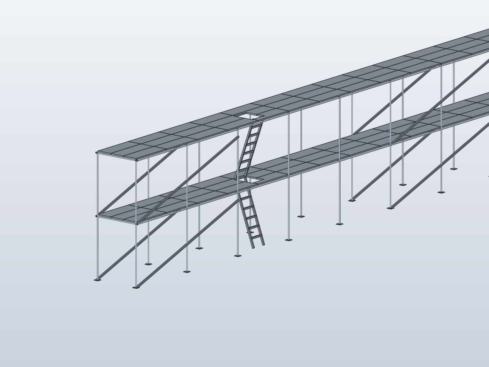
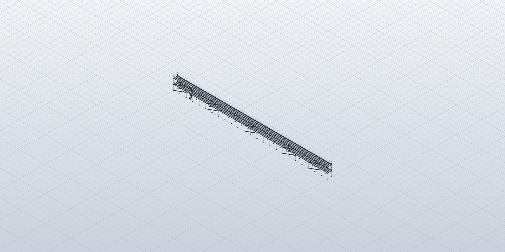
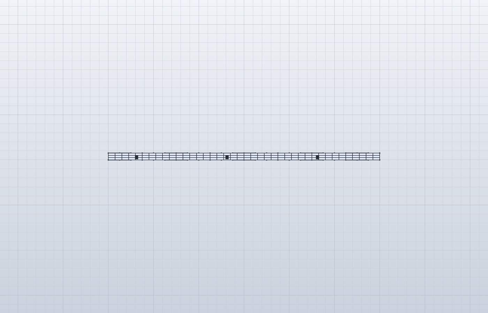
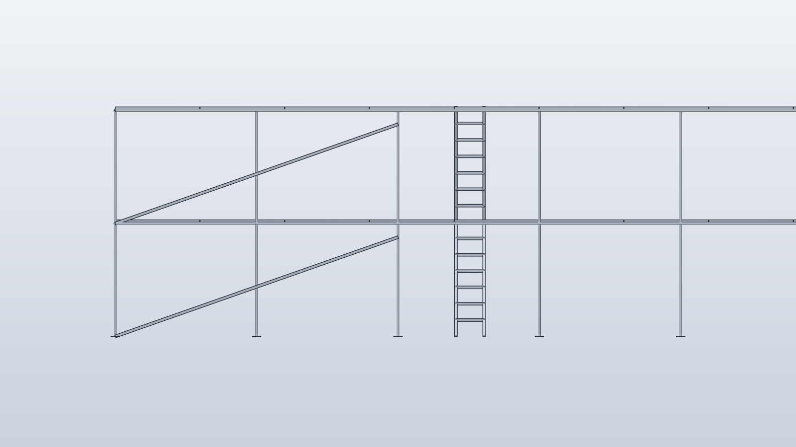
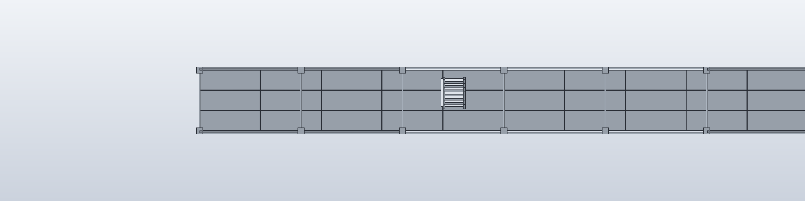
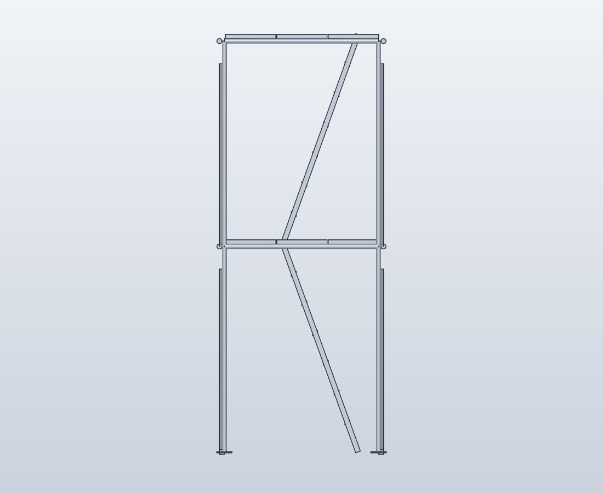
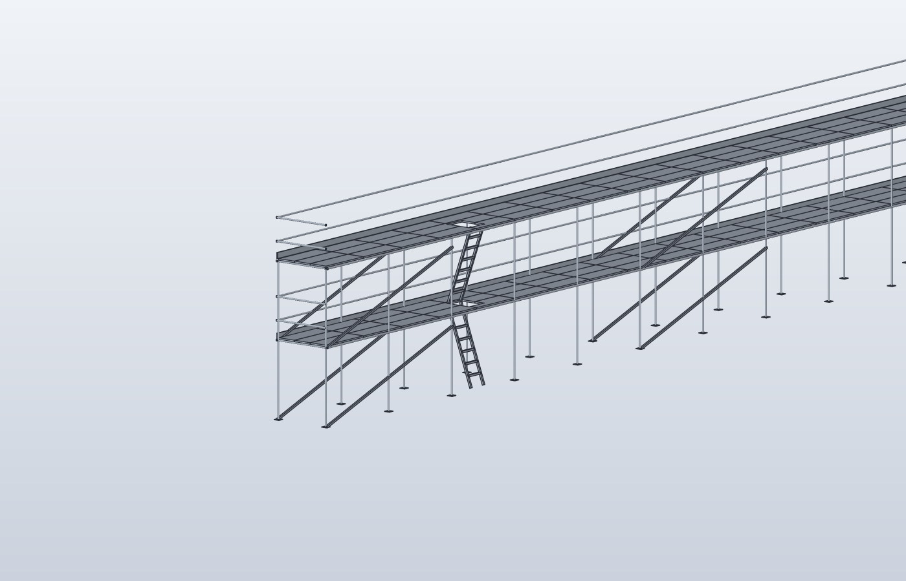

Позиций комплекта
808
488 с ценой + 320 хомутов
Масса
6,4 т
поз. 1–7 — 6 280 кг + хомуты 112 кг
Стоимость
323 808 ₽
позиции 1–7; хомуты — по запросу
Настил
180 м²
240 щитов на двух ярусах
1. Принятая схема
| Система | ЛСПХ-40 — леса строительные приставные хомутовые |
|---|---|
| Длина | 60,0 м — 24 пролёта |
| Шаг стоек | 2,5 м (каталожный ряд 1,5 / 2,0 / 2,5 / 3,0 м) |
| Оси стоек | 25 осей × 2 ряда = 50 стоек |
| Ширина яруса | 1,5 м по осям стоек |
| Высота | 4,0 м = 2 яруса × 2,0 м; верх настила +4,064 м |
| Труба | Ø48×3,5 мм — 3,84 кг/м |
| Раскос | «Связь 5,3 м» на два пролёта: 5,0 м по горизонтали, подъём 1,758 м (19,4°), конец крепится хомутом к стойке ниже узла — см. п. 4 |
2. Ведомость составляющих
цены — розничные dzsl.ru, без доставки и монтажа
| № | Наименование | Тип / размер | Кол-во | Масса ед., кг | Масса, кг | Цена, ₽ | Сумма, ₽ |
|---|---|---|---|---|---|---|---|
| 1 | Стойка 4 м | Ø48×3,5, L=4000 | 50 | 15,36 | 768 | 1 244 | 62 200 |
| 2 | Поперечина | Ø48×3,5, L=1452 | 50 | 5,58 | 279 | 652 | 32 600 |
| 3 | Связь 5,3 м | Ø48×3,5, L=5300 | 68 | 20,35 | 1 384 | 1 684 | 114 512 |
| 4 | Опора простая (башмак) | 150×150×8 | 50 | 0,9 | 45 | 107 | 5 350 |
| 5 | Кронштейн крепления к стене | — | 24 | 1,5 | 36 | 124 | 2 976 |
| 6 | Настил деревянный | щит 0,5×1,5 м, h=40 мм | 240 | 15,0 | 3 600 | 413 | 99 120 |
| 7 | Лестница наклонная (марш) | тетива 2,154 м, 70°, 6 ступеней ≈290 мм | 6 | 28,06 | 168 | 1 175 | 7 050 |
| 8 | Хомут поворотный / неповоротный | Ø48 | 320 (расч. 308 + 4 %) | 0,35 | 112 | по запросу | — |
| Итого по позициям с ценой (1–7) | 488 | ≈ 6 280 | 323 808 | ||||
| Итого по комплекту (1–8) | 808 | ≈ 6 392 | поз. 8 — по запросу | ||||
Сумма 323 808 ₽ — стоимость только оценённых позиций 1–7 (488 шт.). Хомуты (поз. 8, ≈ 320 шт., ≈ 112 кг) в неё не входят: в каталоге цена не опубликована. Полная стоимость комплекта = 323 808 ₽ + 320 хомутов по счёту поставщика.
Расшифровка количества
- Стойки: 25 осей × 2 ряда
- 50
- Поперечины: 25 осей × 2 яруса
- 50
- Связи: 48 пояса (4 × 12 шт. по 5,3 м на 60 м)
- 48
- Раскосы: 5 блоков (пролёты 1–2, 6–7, 12–13, 18–19, 22–23) × 2 яруса × 2 ряда
- 20
- Хомуты: 100 + 40 + 144 + 24 = 308 по расчёту, +4 % → к закупке
- 308 / 320
- Опоры: под каждую стойку
- 50
- Кронштейны: каждый 2-й пролёт × 2 яруса
- 24
- Настил: 40 рядов × 3 щита × 2 яруса
- 240
- Лестницы: 3 места × 2 марша
- 6
Материалы
- Труба Ø48×3,5 (стойки, поперечины, связи, лестницы)
- 677 м ≈ 2 600 кг
- Сталь опор и кронштейнов
- ≈ 80 кг
- Пиломатериал (настил), сосна
- 7,2 м³ ≈ 3 600 кг
- Всего (без хомутов)
- ≈ 6,3 т
3. Как на леса попадают
- 1 С земли на 1-й ярус (+2,0 м) — по нижнему маршу, закреплённому хомутами к стойкам. Подъём 2 024 мм, тетива 2 154 мм, уклон 70°, проекция 737 мм, 6 ступеней с шагом 289 мм по вертикали (≤ 300 мм).
- 2 Через монтажный проём (люк) 0,6 × 0,7 м в настиле 1-го яруса — на второй марш.
- 3 На рабочий настил (+4,0 м) — по верхнему маршу, там же люк в настиле верхнего яруса.

4. Почему раскосы именно такие
Зачем вообще
Узел хомутовых лесов шарнирный — труба в хомуте. Прямоугольная решётка «стойка–поперечина» геометрически изменяема и складывается; неизменяемость даёт треугольник, то есть диагональ.
Почему 5,3 м
Раскос идёт на два пролёта (5,0 м). Диагональ панели 5,0 × 2,0 м равна 5,385 м — то есть каталожная деталь 5,3 м на 85 мм короче и «узел-в-узел» не встанет. Поэтому конец крепится хомутом к стойке ниже узла: при 5,3 м подъём 1,758 м (19,4°). В модели раскос ровно 5 300 мм.
Почему не в каждом пролёте
Предложено 5 связевых блоков по 2 пролёта, наибольший нераскреплённый участок — 10 м (между блоками 2 и 3), торцы закрыты. Это расчётное предположение: шаг связей надлежит подтвердить расчётом/ППР. Консервативный вариант — 12 блоков (48 раскосов): +47 152 ₽, +571 кг, хомуты 380 вместо 320 — всего ≈ 6 983 кг.
Почему в двух рядах и ярусах
В каждом ярусе — передача горизонтального усилия по высоте; в обоих рядах — неизменяемость в двух параллельных плоскостях, иначе леса «складываются» поперёк.
Схема раскосов по пролётам
синий — связевой блок из двух пролётов (20 раскосов = 5 блоков × 2 яруса × 2 ряда)
Наибольший участок без раскоса — пролёты 8–11 (17,5…27,5 м), 10 м. Достаточность такого шага подтверждается расчётом или ППР; альтернатива — раскос в каждой паре пролётов (12 блоков): 96 связей, 380 хомутов, ≈ 6 983 кг, 370 960 ₽ — оценка позиций 1–7, расчёт не выполнялся.
Направление
В блоке раскос идёт снизу-вверх на два пролёта. На лесах длиннее ~40 м в соседних блоках его разворачивают навстречу, чтобы усилия не накапливались в одну сторону — у нас 60 м, при монтаже стоит чередовать.
5. Виды
Все виды сняты с текущей модели (456 тел: настил на двух ярусах, люки, лестницы). Приближённые виды — без скрытий: элементы продолжаются за краем кадра.






6. Проверочный расчёт
полная записка — raschet-LSPH-40.md
Оценочный расчёт по СП 20.13330.2016 / СП 16.13330.2017 / СП 64.13330.2017: сталь С245 (Ry = 245 МПа), сосна (Rи = 13 МПа), полезная нагрузка 2,0 кПа (200 кг/м²), Москва — I ветровой район (w0 = 0,23 кПа), высота до 5 м. Ветровая нагрузка принята по худшему случаю — с фасадной сеткой (φ = 0,70): 0,0966 кПа, F = 23,2 кН на 60 × 4 м.
| № | Проверка | Усилие | Несущая способность | Использование | Вывод |
|---|---|---|---|---|---|
| 1 | Стойка, сжатие с устойчивостью | 16,5 кН | 36,0 кН (φ·A·Ry) | 46 % | проходит |
| 2 | Поперечина, изгиб | σ = 143 МПа | 245 МПа | 58 % | проходит |
| 3 | Настил, изгиб | σ = 2,17 МПа | 13 МПа | 17 % | проходит |
| 4 | Раскос, сжатие | 0,51 кН | 8,8 кН | 6 % | проходит |
| 5 | Анкер, вырыв | 1,29 кН | 4…6 кН (M10, B20) | 22…32 % | проходит |
| 6 | Устойчивость на опрокидывание без анкеров | k = 1,02 | норма k ≥ 1,3 | — | не проходит |
| 6а | То же, с 24 анкерами | k = 2,02 | норма k ≥ 1,3 | 64 % | проходит |
| 7 | Сдвиг от ветра | 23,2 кН | трение 18,8 кН | 123 % | анкеры на срез 0,97 кН |
Что обеспечено
Каркас с запасом: наибольшее использование 58 % (поперечина), стойка 46 %, раскос 6 %. Прогибы: поперечина L/229, настил L/608 при допускаемом L/150.
Что обязательно
Анкеровка к стене — несущий элемент: без неё k = 1,02 при норме 1,3. Нужно 24 кронштейна, анкер с вырывом ≥ 2,6 кН и срезом ≥ 2 кН (двойной запас), M10 в бетон B20 на 80…100 мм.
Не проверено этим расчётом
- несущая способность хомутовых соединений — принимается по паспорту лесов, расчётом не проверяется;
- основание под опорами, тип и качество анкера, прочность материала стены — определяются на объекте;
- местная устойчивость стенки трубы с учётом коррозии (D/t = 13,7 — в норме, толщину подтверждать толщиномером);
- динамика от людей, температура, сейсмика, усталость, обледенение; ограждения в комплект не входят.
Документ не заменяет ППР: нужны привязка к объекту, подпись аттестованного инженера-конструктора и утверждение в проекте производства работ.
7. Допущения и что поменять под проект
- Шаг стоек 2,5 м. 60 м делится ровно на 24 пролёта. При шаге 3,0 м — 21 ось и 42 стойки, но раскос на два пролёта становится 6,3 м: каталожной детали нет, правильнее «Связь 3,7 м» на один пролёт.
- Настил на обоих ярусах — иначе нет подхода к лестницам. Вариант «только верхний» экономит 120 щитов, но подъём придётся делать маршем 4,3 м с земли.
- Крепление к стене через 5 м по длине в двух ярусах; при слабом основании шаг анкеровки уменьшить.
- Ограждения (поручень + бортик) в ведомость не включены — по каталогу это отдельная позиция, нормируется ППР.
- Модель упрощена: стержни — сплошные тела Ø48 для читаемости; массы и веса посчитаны по реальной трубе Ø48×3,5. Цены — розничные dzsl.ru на дату расчёта.